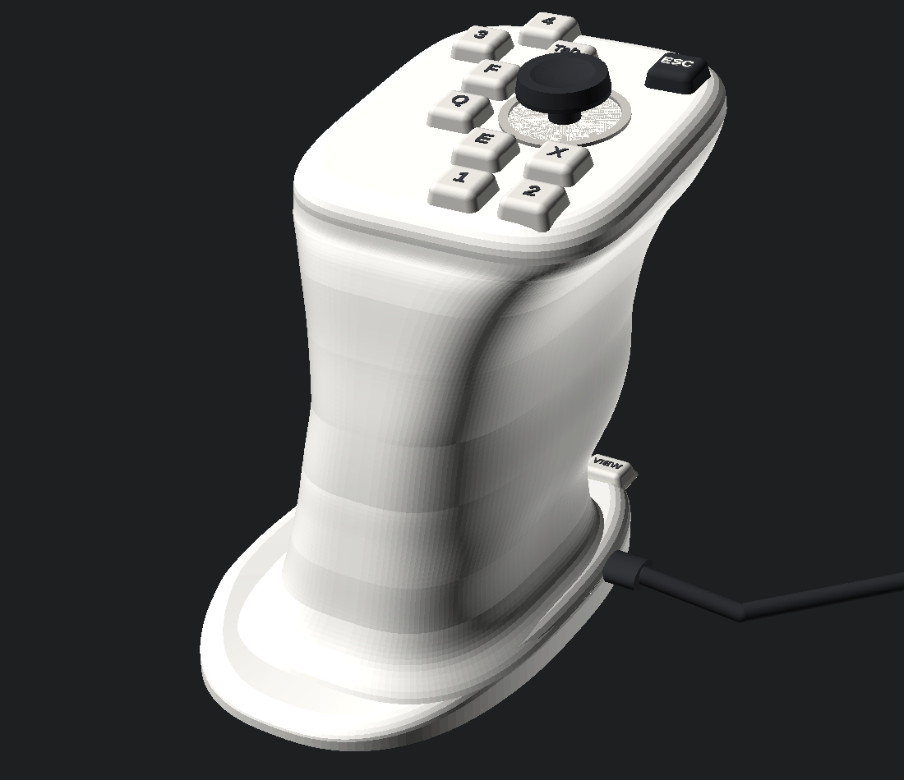

left-hand-controller
マウスと一緒に使う、左手用のゲーム入力デバイスを自作する計画。Apexでバッテリーを巻きながら左右に避けても、ダッシュで回復がキャンセルされない操作を目指す。
持っている既製品を撮影して送る(15分)
マウスやゲームのコントローラーなど、握り心地の参考になるものを撮ってください。写真をもとに、試作の寸法を好みの製品に寄せます。
- 定規かA4の紙を横に添えて、真横・真正面・真上から1枚ずつ
- 自分で握っているところを横から1枚
- スマホは50cmほど離して2倍ズーム(近くから撮ると寸法がゆがむ)
- それぞれ「好き・普通・苦手」と理由をひとこと
- あわせて:デスボ蘇生に使っているキー、移動中に押しっぱなしにしているキー
進み具合
いまは2. 外形づくりの最初。プリンターのセットアップと初印刷(眼鏡スタンド)は完了し、試作用の白いマットPETGも手元にある。
最近終わったこと
- A1 mini 到着・セットアップ・キャリブレーション
- 初印刷:眼鏡スタンド(1.4時間、成功)
- 白マットPETG(TINMORRY)を購入して登録
- 完成イメージ(白・滑らかな形)
このあと
- PCに Bambu Studio を入れる
- ホールセンサーのスティックをAmazonで注文する
- 試作を白PETGで刷って握る
全体は6段階。「Claude」と書いた作業は、写真や感想をもらえればこちらでやります。
準備
完了- プリンター購入(A1 mini、周年セール ¥26,000)
- 開梱、固定具外し、自動キャリブレーション
- フィラメント装填、初印刷(眼鏡スタンド)
外形づくり
いまここ- 既製品の写真を送る
- 試作の寸法を、好みの製品に寄せる Claude
- PCに Bambu Studio を入れて、試作を白マットPETGで刷る(数時間。寝る前に流すと楽)
- 握って感想を伝える(「もっと太く」「親指が届かない」など、言葉でOK)
- 感想を数字に直して次の版を作る Claude → 3〜5を、しっくりくるまで繰り返す
何度作り直しても合わないときは、手の撮影ガイド(リポジトリの docs/photo-guide.md)で手の寸法から作り直す。
電子部品
これから- 部品を注文(2と並行して進められる)
- Pico に CircuitPython を入れる(10分)
- ブレッドボードにスティックとボタン数個を仮組み
- ファームウェアを書き込んで、スティックの実測値に合わせる Claudeと一緒に
- メモ帳と Apex の射撃訓練場で入力を確認
組み立て
これから- 確定した外形の中に、基板の置き場・底蓋・USB-Cの口を設計 Claude
- 本体・底蓋・ボタンを別々に印刷
- スイッチとスティックをはんだ付けして組み込む
実戦
これから- Apex で使いながら、デッドゾーン・ダッシュの発動条件・キー割り当てを調整
- ゴール:バッテリーを巻きながらレレレしても、回復がキャンセルされないこと
販売
気が向いたら- 完成品の写真とデモ動画をSNSに出して反応を見る
- 反応があれば販売版を設計し、BOOTH で小ロット販売


寸法は標準的な手を想定した仮の値。既製品の写真と試作の感想で調整する。
ボタン配置
| 場所 | 押す指 | ボタン | ピン |
|---|---|---|---|
| 天面の中央 | 親指 | スティック → WASD(8方向)、押し込み C | GP26 / GP27 / GP11 |
| 天面の周り | 親指 | 1 2 3 4 Q E X F Tab ESC | GP2〜GP10, GP16 |
| 柱の前面 | 人差し指・中指 | 上から SPACE SHIFT CTRL G | GP13 / GP15 / GP14 / GP12 |
| 土台の縁 | 手をずらして | REV デスボ蘇生(キー未定) F1 Fnなしで直接 VIEW 武器を眺める(N) | GP17 / GP18 / GP19 |
2つの操作モード
apex(はじめの設定)
スティックを倒してもダッシュは乗らない。ダッシュは SHIFT ボタンだけ。回復中にどの方向へ倒してもキャンセルされない。
auto-dash
スティックを92%以上倒すとダッシュ。ただし回復キー(4)を押してから7秒間はダッシュしない。
Tab とスティック押し込みを1.5秒長押しで切り替え。選んだモードは本体に保存される。
買ったもの
| 品名 | 値段 | 状態 |
|---|---|---|
| Bambu Lab A1 mini | ¥26,000 | 使用中 |
| Bambu PLA ベーシック 黒(スプール付き) | ¥2,210 | 使用中 |
| Bambu PETG ベーシック 黒(スプール付き) | ¥1,885 | 手元 |
| 予備ホットエンド 0.4mm ステンレス | ¥1,403 | 手元 |
| 3P→2P 変換アダプター | ― | 使用中 |
| TINMORRY マットPETG 白 | ¥2,099 | 手元 |
| Raspberry Pi Pico H(秋月) | ¥920 | 手元 |
| ブレッドボード+ジャンパーワイヤーセット EIC-102J(秋月) | ¥1,280 | 手元 |
| 耐熱電子ワイヤ イラックス AWG28 1m×10色(秋月) | ― | 手元 |
| タクトスイッチ 6mm 黒 TVDT18-050CB-T(10個入り、秋月) | ¥120/パック | 手元 |
| ジャンパーワイヤー オス-オス 15cm 赤 10本(秋月) | ¥580 | 手元 |
次に買うもの:電子部品
秋月で買うものはすべて買い済み。残りはこれだけ。タクトスイッチは完成版で18個使うので、手元が1パック(10個)なら組み立て前にもう1パック足す。
| 品名 | 数 | 目安 | どこで | 選び方 |
|---|---|---|---|---|
| ホールセンサー式スティック | 2 | ¥1,000〜2,000 | Amazon | 「Hall Effect」と明記、PS4用。1個は予備 |
| microUSBケーブル | 1 | 〜¥500 | どこでも | データ通信対応(充電専用は不可)。家にあれば不要 |
工具(持っていなければ)
| 品名 | 目安 | メモ |
|---|---|---|
| はんだごて(温調式。HAKKO FX-600 など) | ¥2,000〜4,000 | Amazon は偽物に注意。販売元を確認 |
| はんだ 0.8mm・こて台 | 〜¥1,500 | こて台は安全のため必須 |
| ニッパー・ワイヤーストリッパー | 〜¥1,000 | ストリッパーは「AWG28(0.08sq)対応」を選ぶ。細い線用でないと中の線ごと切れる |
| テスター | 〜¥2,000 | 配線ミスを探すのに使う |
| デジタルノギス | ¥1,500〜2,500 | 部品の寸法を測る |
収納
| 品名 | 目安 | メモ |
|---|---|---|
| トランク型工具箱(TRUSCO T-350 など) | ¥2,000〜3,000 | 工具とパーツケースが全部入るサイズ |
| 仕切りを動かせるパーツケース | 2個 | 電子部品用とネジ用 |
| 耐熱シリコン作業マット | ¥1,000〜1,500 | はんだ付け用 |
| 密閉容器+シリカゲル+湿度計 | ¥1,500〜3,000 | 開けたフィラメントの保管用 |
あとで(組み立ての段階)
| 品名 | メモ |
|---|---|
| M3 ヒートインサート・M3×8 皿ネジ | 底蓋の固定用 |
| パネルマウント USB-C 延長ケーブル | コネクタを本体に固定して壊れにくくする |
| TINMORRY マットPETG 黒(任意) | 黒いパーツのツヤを白とそろえたいとき |
手持ちと使い道
| フィラメント | プリンターでの設定 | 使い道 |
|---|---|---|
| TINMORRY マットPETG 白 | Generic → PETG | コントローラーの試作と完成版 |
| Bambu PETG ベーシック 黒 | Bambu Lab → PETG Basic | スティックの頭・ESC・SHIFT |
| Bambu PLA ベーシック 黒 | Bambu Lab → PLA Basic | MakerWorld の小物など、楽しみ用 |
買うときのルール
太さは 1.75mm
2.85mm という太いものもあるので注意。メーカーはどこでもよい。プリンターの一覧にないメーカーは「Generic」を選ぶ。
名前にこれが入っていたら買わない
CF(カーボン繊維)、GF(ガラス繊維)、蓄光、金属入り。ノズルの中を削って傷める。使うには焼入れ鋼のノズルが必要。
最初の1本はスプール付き
リフィル(スプールなし)は、空になったスプールに付け替える2本目以降用。
入れ方・抜き方
入れる
- 先を斜めに切って、まっすぐに伸ばす
- スプール側のチューブの入口から、止まるまで押し込む
- 画面の「フィラメント」→ Ext →「ロード」
- 種類を選ぶ(上の表の設定)
抜く
- 画面の「フィラメント」→ Ext →「アンロード」
- 温まって中で切られるまで待つ(2〜3分)
- スプール側からゆっくり引き抜く
- 先をスプールの縁の穴に差して留める
冷えたまま手で引っ張らないこと。
抜いたスプールは、シリカゲルと一緒に袋に入れて口を閉じる。PETGは特に湿気に弱い。
印刷物のはがし方
- プレートが冷たくなるまで待つ(10〜20分)
- プレートの手前を持ち上げて、プリンターから外す
- 両手で端を持って軽く反らせる。印刷物が浮いてくる
- 取れなければプラスチックのヘラを差し込む(金属は傷が付くので使わない)
指でこじらない。PETGはくっつきやすいので、刷る前にスティックのりを薄く塗っておく(印刷後は水で洗う)。
市販品(Mouserpad v2)を自分で使ってみた不満と、Amazonレビューの不満から決めた仕様。Mouserpad v2 の外寸は 90×125×120mm(幅×奥行き×高さ)。
| 決めたこと | 理由 |
|---|---|
| ダッシュをスティックから切り離す | 市販品は前に倒すと勝手にダッシュが乗り、レレレや前進でバッテの回復がキャンセルされる |
| ESC ボタンを付ける | 市販品で一番多い不満。ゲーム中にキーボードへ手を伸ばすことになる |
| キーを自由に割り当てられる | 市販品は固定で変えられない |
| 土台に3ボタン(デスボ蘇生・F1・武器眺め) | キーボードで押しているキーを減らす。撃ち合い中に押さないので、手をずらして押す位置で足りる。縁に置き、頭を沈めて誤爆を防ぐ |
| グリップは下を太く、上を細く | 市販品は小指と薬指が窮屈で、握り込んで手首が痛くなるという声 |
| 手首側が低い傾斜の土台 | 机の縁で手が浮いて、掌の小指側に荷重が集中する問題への対策 |
| USB-C を本体に固定して出す | 市販品はコネクタを面一に付けたせいで、3か月半で壊れたという報告 |
| 有線だけにする | 無線にすると技適が必要。有線のUSB給電なら電気用品安全法(PSE)の対象外 |
| ファームウェアは自作 | 販売するときにライセンスで困らないように |
| 形はオリジナル | 市販品の形をまねて売ると、不正競争防止法に触れるおそれ |
| 専用ソフトなしで割当を変えられる | 市販品はゲーム内設定を大きく変えるしかなく、キーボードに戻すと混乱する。一方で「インストール不要」も評価されているので、PCに挑すと出てくる設定ファイルを書き換える方式にする |
| ケーブルを取り外せる | 市販品はケーブルが短く、取り外せないという声。USB-Cの口なら好きな長さに替えられる |
| 手の大きさに合わせられる | 市販品はサイズ調整ができない。形を数字で管理しているので、売るときはS/M/Lを出せる |
| 起動ごとにスティックの中心を測り直す | ホールセンサーでも、使ううちに中心がずれることがある |
プリンター
- スプール
- フィラメントが巻いてあるリール
- リフィル
- スプールなしのフィラメント。空いたスプールに付け替えて使う
- チューブ
- スプールからツールヘッドまでフィラメントを通す白いパイプ
- ツールヘッド
- ノズルが付いて左右に動く箱。上の4つの穴にチューブを挿す
- ノズル / ホットエンド
- フィラメントを溶かして押し出す先端。予備を1本持っている
- ビルドプレート
- 印刷物を作る金色の板。磁石で付いていて、外して曲げると印刷物が取れる
- パージワイパー
- 試し出しのプラスチックを受け止めて、ノズルの先を掃除する部品
- キャリブレーション
- 台の傾きや振動を測る自動調整
- AMS lite
- 4色を自動で切り替える別売りユニット。今は不要
素材
- PLA
- 一番刷りやすい素材。熱に弱く、夏の車内などで変形する
- PETG
- 丈夫で熱に強い。完成版向き
- マット
- ツヤ消し。積層の筋や指紋が目立ちにくい
- CF / GF
- カーボン繊維 / ガラス繊維入り。ノズルを削るので使わない
ソフト・データ
- Bambu Handy
- スマホのアプリ。印刷の開始や進み具合の確認
- Bambu Studio
- PCのソフト。自分のデータを刷るときに使う(スライサー)
- MakerWorld
- 他の人が作ったモデルを探して刷れるサイト
- STL
- 3Dの形のデータ。試作は proto_v1.stl
電子部品
- Raspberry Pi Pico
- コントローラーの頭脳。PCにはキーボードとして見える
- ファームウェア
- Pico に入れるプログラム。スティックやボタンをキー入力に変える
- ホールセンサー
- 磁石で位置を読むスティック。削れないのでドリフトしにくい
- タクトスイッチ
- 押すとカチッと鳴る小さなボタン
- ブレッドボード
- はんだ付けせずに部品を挿して試せる板
- デッドゾーン
- スティックを少し倒しただけでは反応しない範囲
最終更新 2026-11-19。データと設計ファイルはリポジトリの claude/3d-printer-controller-fglar7 ブランチにある。